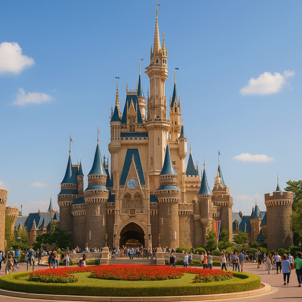

Tokyo Disneyland – Il Magico Parco a Tema del Giappone con Giostre Emozionanti e Parate Incantate
Tokyo Disneyland è il parco a tema più famoso del Giappone e una delle destinazioni di divertimento più visitate al mondo. Situato appena fuori Tokyo, nella Prefettura di Chiba, questo parco pieno di fantasia dà vita ai personaggi e alle storie più amate della Disney attraverso attrazioni emozionanti, parate spettacolari e ambientazioni incantate che affascinano bambini e adulti.
Un Mondo di Fantasia nel Cuore del Giappone
Aperto nel 1983, Tokyo Disneyland accoglie milioni di ospiti ogni anno, offrendo una combinazione unica di magia Disney classica e ospitalità giapponese con un'attenzione ai dettagli eccezionale. Il parco è diviso in sette aree tematiche, tra cui:
- World Bazaar: Una via dello shopping nostalgica ispirata all’America dei primi del ‘900.
- Adventureland: Esplora giungle, fiumi e i Pirati dei Caraibi.
- Westernland: Vivi il selvaggio west con Big Thunder Mountain e l’ambientazione da frontiera americana.
- Fantasyland: La terra di Cenerentola, Peter Pan e altre favole senza tempo.
- Tomorrowland: Un’area futuristica con attrazioni a tema spaziale e innovativo.
- Critter Country & Toontown: Perfette per bambini e famiglie, piene di divertimento giocoso.
Perché Visitare Tokyo Disneyland?
Che tu sia un fan Disney da sempre o semplicemente alla ricerca di un'esperienza indimenticabile con la famiglia, Tokyo Disneyland offre intrattenimento di livello mondiale e un servizio impeccabile. Non è solo questione di giostre – le parate giornaliere, gli eventi stagionali e i prodotti esclusivi rendono ogni visita un ricordo unico. Tokyo Disneyland è costantemente classificato tra i migliori parchi tematici al mondo, unendo creatività occidentale e precisione giapponese.
Attrazioni Principali:
- Iconico Castello di Cenerentola al centro del parco
- Festività stagionali come Halloween e Natale
- Parata "Dreaming Up!" di giorno e Electrical Parade di sera
- Snack Disney esclusivi per il Giappone e merchandising originale
- Pulizia impeccabile e personale incredibilmente cortese
Organizza la Tua Visita
Situato a Urayasu, Chiba, a soli 30 minuti dalla Stazione di Tokyo in treno, Tokyo Disneyland è facilmente raggiungibile e aperto tutto l’anno. Si consiglia la prenotazione anticipata dei biglietti, soprattutto durante le stagioni di punta e le festività. Per vivere appieno l’esperienza Disney, valuta di soggiornare in uno degli hotel ufficiali del Tokyo Disney Resort.
Tokyo Disneyland non è solo una destinazione – è un viaggio magico attraverso le tue storie preferite, reinterpretate nello stile unico del Giappone. Non perdere l’occasione di vivere questa magia!
Tag: Tokyo Disneyland, parchi a tema in Giappone, attrazioni per famiglie Tokyo, parate Disney, vacanze a Tokyo, giostre Disney, esperienze magiche Giappone, intrattenimento Tokyo, guida di viaggio Tokyo
Hai in programma di visitare Tokyo Disneyland?
Per un'esperienza davvero coinvolgente e ricca di informazioni, ti consigliamo di prenotare una guida privata certificata del nostro team. Tutte le nostre guide sono professionisti autorizzati ufficialmente dal governo giapponese e offrono tour personalizzati in base ai tuoi interessi. Contatta in anticipo la guida scelta per confermare la disponibilità e ricevere assistenza esperta per il tuo viaggio.